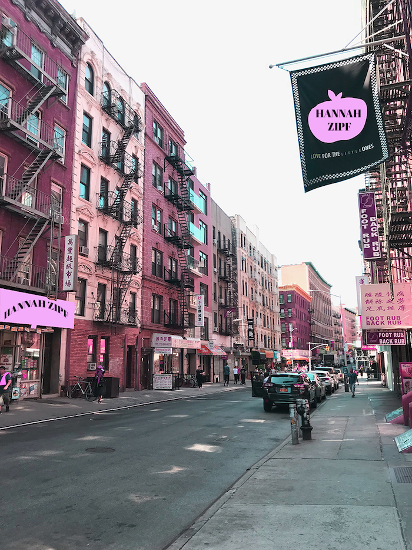

PHOTOS AND VIDEOS 📸
This is a video documenting daily life and sights in New York City.
A banner made with three different photos.

This photo was taken in Lower Manhattan. It was edited on Adobe Photoshop by experimenting with different effects, saturations, and hues. Shapes were cut out within the image, made pink, and text was added.
